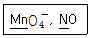
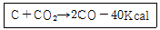

화학분석기능사 (2005-07-17 기출문제)
1과목: 일반화학
1. 알칼리금속에 속하는 원소와 할로겐족에 속하는 원소가 결합하여 화합물을 생성하였다. 이 화합물의 화학결합은 무엇인가? (단, 수소는 제외함)
- 이온결합
- 공유결합
- 금속결합
- 배위결합
(정답률: 77%)

2. 산화시키면 카르복실산이되고, 환원시키면 알코올이 되는 것은?
- C2H5OH
- C2H5OC2H5
- CH3CHO
- CH3COCH3
(정답률: 82%)
3. 18℃에서 CH3COOH의 전리상수는 1.8×10-5이다. CH3COOH의 0.1몰 농도의 전리도(α)는 얼마인가?
- 1.8×10-4
- 1.3×10-3
- 1.8×10-2
- 0.9
(정답률: 43%)
4. 탄소간의 이중 삼중 결합의 검출에 이용되며 불포화화합물에 가하면 적갈색이 무색으로 변하는 할로겐 원소는?
- F2
- Br2
- Cl2
- I2
(정답률: 74%)
5. 다음 중 탄소원자(C)와 탄소원자(C) 사이의 결합에너지가 가장 큰 화합물은?
- CH H CH(3중결합)
- CH2 = CH2
- CH3CH3
- C2H5OH
(정답률: 67%)
6. 탄소는 4족 원소로 모든 생명체의 가장 기본이 되는 물질이다. 다음 중 탄소의 동소체로 볼 수 없는 것은?
- 원유
- 흑연
- 활성탄
- 다이아몬드
(정답률: 91%)
7. 다음 중 포화탄화수소 화합물은?
- 요오드 값이 큰 것
- 건성유
- 시클로헥산
- 생선기름
(정답률: 92%)
8. 실험실에서 유리기구 등에 묻은 기름을 산화시켜 제거하는 데 쓰이는 클리닝용액(cleanig solution)은 다음 중 어느것인가?
- 크롬산칼륨 + 진한황산
- 중크롬산칼륨 + 황산제일철
- 브롬화은 + 하이드로퀴논
- 질산은 + 프롬알데히드
(정답률: 77%)
9. 전자궤도의 d 오비탈에 들어갈수 있는 전자의 총수는?
- 2
- 6
- 10
- 14
(정답률: 80%)
10. 다음 결합 중 결합력이 가장 약한 것은?
- 공유결합
- 이온결합
- 금속결합
- 반데르발스결합
(정답률: 77%)
11. 현재 사용되는 주기율표는 다음 어느것에 의해 만들어졌는가?
- 중성자의 수
- 양성자의 수
- 원자핵의 무게
- 질량수
(정답률: 89%)
12. 40℃에서 어떤 물질은 그 포화용액 84g 속에 24g 녹아 있다. 이 온도에서 이 물질의 용해도는?
- 30
- 40
- 50
- 60
(정답률: 71%)
13. 다음 중 염기성이 가장 강한 것은?
- 0. 1M HCl
- [H+] = 10-3
- pH = 4
- [OH-] = 10-1
(정답률: 66%)
14. 페놀(C6H5OH)에 대한 설명 중 옳은 것은?
- 산(-COOH)과 반응하여 에테르를 만들어 낸다.
- FeCl3과 반응하여 수소기체를 발생시킨다.
- 수용액은 염기성이다.
- 금속나트륨과 반응하여 수소기체를 발생시킨다.
(정답률: 45%)
15. 0℃의 얼음 2g을 100℃의 수증기로 변화시키는데 필요한 열량은? (단, 기화잠열 : 539㎈/g, 융해열 : 80㎈/g이다. )
- 1209㎈
- 1438㎈
- 1665㎈
- 1980㎈
(정답률: 68%)
16. 다음 화합물의 액성이 모두 염기성인 것은?
- SO2, Na2O
- CaO, KCl
- Na2O, K2CO3
- CO2, NaNO3
(정답률: 59%)
17. 다음 중 금속과 비금속의 경계에 위치하는 원소로 금속성과 비금속성을 동시에 지니고 있는 양쪽성 원소에 해당되지 않는 것은?
- Al
- Zn
- Sn
- Cu
(정답률: 68%)
18. NaCl과 KCl을 구별하는 가장 좋은 방법은?
- AgNO3 용액을 가한다.
- H2SO4를 가한다
- 불꽃반응을 실시한다.
- 페놀프탈레인 용액을 가한다.
(정답률: 80%)
19. 황산구리 용액에 아연을 넣을 경우 구리가 석출되는 것은 아연이 구리보다 무엇의 크기가 크기 때문인가?
- 이온화경향
- 전기저항
- 원자가전자
- 원자번호
(정답률: 90%)
20. 다음은 혼합물과 이를 분리하는 방법 및 원리를 연결한 것이다. 잘못된 것은?
- 혼합물 : NaCl, KNO3, 적용원리 : 용해도차, 분리방법 : 분별결정
- 혼합물 : H2O, C2H5OH, 적용원리 : 끓는점의 차, 분리방법 : 분별증류
- 혼합물 : 모래, 요오드, 적용원리 : 승화성, 분리방법 : 승화
- 혼합물 : 석유, 벤젠, 적용원리 : 용해성, 분리방법 : 분액깔때기
(정답률: 77%)
2과목: 분석화학
21. 다음 중 금(Au), 백금(Pt)을 녹일 수 있는 용액은?
- 질산
- 황산
- 염산
- 왕수
(정답률: 76%)
22. 다음 밑줄 친 원소의 산화수는 얼마인가?

- +7, +2
- +4, +2
- -1, -2
- -7, -2
(정답률: 80%)
23. 중화 적정에 사용할 표준 산으로 0.1N의 옥살산을 만들려고 한다. 다음 방법 중 옳은 것은? (단, 옥살산 결정의 분자식은 C2H2O4ㆍ2H2O 이다.)
- 이 결정 4.5[g]을 물에 녹여 1000[mL]의 용액으로 만든다.
- 이 결정 4.5[g]을 물 500[mL]에 녹인다.
- 이 결정 6.3[g]을 물에 녹여 1000[mL]의 용액으로 만든다.
- 이 결정 6.3[g]을 물 1000[mL]에 녹인다.
(정답률: 70%)
24. 산소의 원자 번호는 8 이다. O2-이온의 바닥상태의 전자배치로 맞는 것은?
- 1S2, 2S2, 2P4
- 1S2, 2S2, 2P6, 3S2
- 1S2, 2S2, 2P6
- 1S2, 2S2, 2S4, 3S2
(정답률: 66%)
25. 다음 중 화학결합물 분자의 입체구조가 정사면체 모양이 아닌 것은?
- CH4
- BH4-
- NH3
- NH4+
(정답률: 81%)
26. 황산표준 용액을 메스플라스크에 정확히 맞추어 놓고 밀봉하였다. 다음날 오전에 자세히 보니 용액의 높이가 표선 아래로 줄어들었다. 다음 중 어떤 요인 때문인가?
- 실내온도가 내려갔다.
- 황산과 물이 반응한 이유이다.
- 용액이 증발한 이유이다.
- 처음에 정확히 맞추지 못했기 때문이다.
(정답률: 66%)
27. 다음 물질 중 가수 분해되어 산성이 되는 염은?
- NaHCO3
- NaHSO4
- NaCN
- NH4CN
(정답률: 76%)
28. 다음 중 지시약이 아닌 것은?
- 메틸 오렌지
- 브롬크레졸 그리인
- 브롬티몰 블루우
- 메틸 에테르
(정답률: 75%)
29. Cd(NO3)22KCN ⇄ Cd(CN)2O3+ 2KNO3 에서 침전 생성물의 색깔은?
- 흰색
- 붉은색
- 파란색
- 검은색
(정답률: 66%)
30. 다음의 원자 및 분자간 결합 중 물에 가장 잘 녹을 수 있는 결합성 물질은?
- 쌍극자 - 쌍극자 상호결합
- 금속결합
- Van der Waals 결합
- 수소결합
(정답률: 73%)
31. Pb3O4 을 포함한 시료 10g을 침전시켜 PbSO4 6g을 얻었다. 이 시료 중 Pb는 몇 % 함유되어 있는가? (단, Pb,O 및 S의 원자량은 207.2, 16.0, 32.0)
- 41.0
- 60.0
- 68.3
- 90.7
(정답률: 34%)
32. 다음 중 침전물이 노란색인 화합물은?
- BaCO3
- BaCrO4
- CaCO3
- SrCO3
(정답률: 76%)
33. K2CrO4에 노란색 침전을 형성시켜 확인하는 물질은?
- Ag+
- Pb++
- Hg2++
- Hg++
(정답률: 68%)
34. 아세톤이나 에탄올 검출에 이용되는 반응은?
- 은거울 반응
- 요오드포름 반응
- 비누화
- 술폰화
(정답률: 72%)
35. 다음은 양이온과 수용액에서의 그 색상을 짝지워 놓은 것이다. 틀린 것은?
- Cr3+ - 무색
- Co2+ - 적색
- Mn2+ - 적색
- Fe2+ - 황색
(정답률: 63%)
36. 침전 적정법에서 과잉의 적정 시약과 작용하는 지시약을 사용하지 않는 방법은?
- Mohr법
- Volhard법
- Fajans법
- Warder법
(정답률: 62%)
37. 어느 산 HA의 0. 1M 수용액을 만든 다음, pH 미터로 pH를 측정하였더니 25℃에서 3.0이었다. 이 온도에서 산 HA의 이온화 상수 Ka는?
- 1.01×10-3
- 1.01×10-4
- 1.01×10-5
- 1.01×10-6
(정답률: 44%)
38. 다음 화학평형에서 평형을 오른쪽으로 진행시키기 위한 조건은?

- 온도를 높이고 압력을 가한다.
- 온도를 내리고 압력을 가한다.
- 온도를 내리고 압력을 내린다.
- 온도를 높이고 압력을 내린다.
(정답률: 48%)
39. 킬레이트 적정에서 E. D. T. A. 표준용액 사용시 완충용액을 가하는 타당한 이유는?
- 적정시 알맞는 pH를 유지하기 위하여
- 금속지시약 변색을 선명하게 하기 위하여
- 표준용액의 농도를 일정하게 하기 위하여
- 적정에 의하여 생기는 착화합물을 억제하기 위하여
(정답률: 71%)
40. 10g의 어떤 산을 물에 녹여 200mL의 용액을 만들었을 때 그 농도가 0.5M 이었다면, 이 산 1몰은 몇 g 인가?
- 40g
- 80g
- 100g
- 160g
(정답률: 59%)
3과목: 기기분석
41. 물의 이온과 관련된 설명 중 잘못된 것은?
- 산성에서는 [H+]의 값이 [OH-]보다 작다.
- 중성에서는 [H+]와 [OH-]의 값은 같다.
- 물의 이온곱은 상온에서 거의 1×10-14이다.
- 알칼리 용액에서는 [OH-]의 값이 [H+]보다 많다.
(정답률: 72%)
42. 산-염기 적정을 전위차법으로 적정할 때에 관한 설명 중 틀린 것은?
- 유리전극을 사용한다.
- 금, 팔라듐 전극을 사용한다.
- 포화 칼로멜 전극을 사용한다.
- 측정 전위는 용액의 pH에 비례한다.
(정답률: 61%)
43. 25℃에서 오스트발트 점도계를 사용하여 흘러내리는 시간을 측정하니 물은 20초 에틸알콜 수용액은 56초 였다. 에탄올의 물에 대한 비점도는 얼마인가? (단, 이 온도에서 밀도는 물이 0.999g/cm3, 에탄올이 0.887g/cm3 이다. )
- 2.49
- 3.45
- 4.16
- 5.87
(정답률: 38%)
44. 다음 중 적외선 스펙트럼의 원리로 맞는 것은?
- 핵자기공명
- 전하이동전이
- 분자전이현상
- 분자내 원자들이 진동
(정답률: 57%)
45. 다음의 얇은막크로마토그래피(TLC) 작동법 중 틀린 것은?
- 점적의 직경은 2∼5mm 정도가 좋다.
- 시약량은 분석용 TLC법에서는 점적당 10∼100μg 정도이다.
- 상승전개나 하강전개법 그리고 일차원 혹은 다차원 방법을 사용할 수 있다.
- 전개시간이 보통 종이크로마토그래피법에서 보다도 얇은막 크로마토그래피법이 더 느리다.
(정답률: 74%)
46. 액체 크로마토그래피의 검출기가 아닌 것은?
- UV 흡수 검출기
- IR 흡수 검출기
- 전도도 검출기
- 이온화 검출기
(정답률: 44%)
47. 분석법을 선택하는데 고려해야 할 특성중 틀린 것은?
- 신속성
- 시료당 비용
- 조작자의 연령
- 장치의 가격과 이용 가능성
(정답률: 90%)
48. pH 미터를 조작할 때 Adjustment 꼭지나 Correcction 꼭지를 조정하는 근본적인 목적은?
- 증폭으로 기전력을 높이기 위하여
- pH 미터의 정확도를 높이기 위하여
- 일정한 전위차를 눈금에 맞추기 위하여
- 수소이온 농도에 의한 발생기 전력을 낮추기 위하여
(정답률: 47%)
49. LC(액체크로마토그래피) 중 하나인 이온크로마토그래피(IC)에서 가장 널리 사용되는 검출기는?
- UV검출기
- 형광검출기
- 전기전도도 검출기
- 굴절율 검출기
(정답률: 71%)
50. 다음 중 GC(가스크로마토그래피)에서 사용되는 검출기가 아닌 것은?
- 불꽃이온화 검출기
- 전자포획 검출기
- 자외/가시광선 검출기
- 열전도도 검출기
(정답률: 65%)
51. 다음 중 1g-당량에 해당하는 전기량은?
- 1.6×10-19C
- 1.0C
- 96.5C
- 96500C
(정답률: 75%)
52. pH = 5 일 때 pOH 얼마인가?
- 3
- 5
- 7
- 9
(정답률: 79%)
53. 전해질 용액에서 전기 전도도를 옳게 설명한 것은?
- 극의 넓이에 반비례
- 이온의 이동도에 반비례
- 용액의 단위 부피중의 이온수에 비례
- 전도도는 두전극 사이의 거리에 비례
(정답률: 49%)
54. 적외선 분광광도계의 광원으로 많이 사용되는 것은?
- 나트륨 램프
- 텅스텐 램프
- 네른스트 램프
- 할로겐 램프
(정답률: 55%)
55. 다음 기체크로마토그래피 정성분석 방법으로 맞는 것은?
- 내부표준법
- 면적측정법
- 절대검량산법
- 내부표준물첨가법
(정답률: 58%)
56. 브롬수가 피부에 묻으면 어떤 처리를 해야 하는가?
- 염기로 세척한다.
- 아세톤으로 닦는다.
- 자연적으로 없어지게 그냥 둔다.
- 다량의 글리세린으로 문질러 닦아낸다.
(정답률: 71%)
57. 전위차법에 사용되는 이상적인 기준전극이 갖추어야 할 조건 중 틀린 것은?
- 시간에 대하여 일정한 전위를 나타내야 한다.
- Nernst식에 따라야 하며 가역적이지 말아야 한다.
- 작은 전류가 흐른 후에는 본래 전위로 돌아와야 한다
- 온도 사이클에 대하여 히스테리시스를 나타내지 않아야 한다.
(정답률: 72%)
58. 1.0×10-4몰 용액의 어떤 시료를 1.5cm 용기에 넣었을 때 λmax = 250nm에서 투광도 40% 이다. 250nm 에서 εmax(최대 몰흡광도)는?
- 1.5 × 103
- 2.5 × 103
- 3.5 × 103
- 4.5 × 103
(정답률: 48%)
59. 다음 중 기기분석의 장점이 아닌 것은?
- 분석시료의 전처리가 불필요하다.
- 높은 감도의 결과를 얻을 수 있다.
- 분석결과를 신속하게 얻을 수 있다.
- 소량 또는 극소량의 시료도 분석가능하다.
(정답률: 70%)
60. 자외선 분광분석에서 용매를 선택할 때의 중요한 기준은?
- 단파장 쪽으로 이동
- 복사선의 산란 정도
- 복사선의 투과능력
- 장파장 쪽으로 이동
(정답률: 72%)